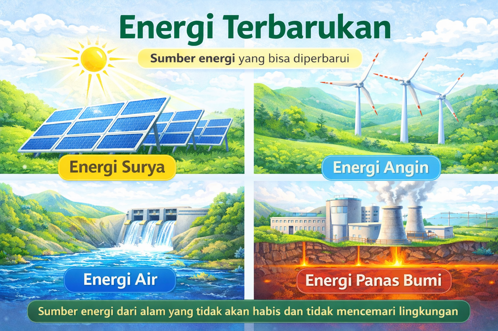

Energi terbarukan adalah sumber energi yang dapat diperbarui secara alami dan tidak akan habis digunakan. Contoh energi terbarukan antara lain energi matahari, energi angin, energi air, dan energi panas bumi. Energi ini dianggap lebih ramah lingkungan karena menghasilkan polusi yang lebih sedikit dibandingkan bahan bakar fosil seperti minyak dan batu bara. Penggunaan energi terbarukan semakin penting untuk menjaga kelestarian lingkungan dan mengurangi dampak perubahan iklim di bumi.
← Kembali ke daftar IPA